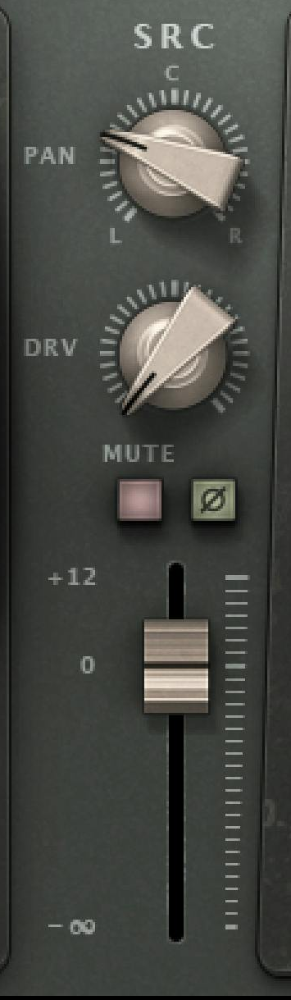
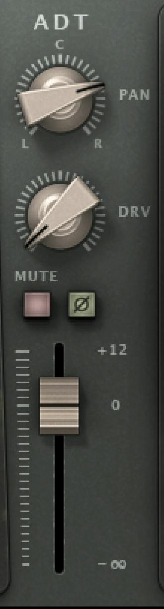

军鼓空间 · Reel ADT
01 / 08
军鼓的空间想更宽
先试混响前的 ADT
对象：Waves 官方产品图 · © Waves Audio Ltd.
让直达军鼓留在中心，单独调整空间支路。
官方 Stereo 界面，版本未标注。
19.98 ms、L+R、LFO 等均为展示状态，非本文设置。
Send → Reel ADT → Stereo Reverb
在独立混响返回上试；不是每条军鼓都必须加。
路由与试听建议，未经音频实测。
军鼓空间 · Reel ADT
02 / 08
干声居中，空间走支路
路由示意 · 功能依据：Reel ADT User Guide / Pro-R 2 Help
原军鼓直达 Mix Bus；另一条 Send
先经 Reel ADT，再进全 Wet 混响。
Snare
直达路径
Dry · 居中
Send
Reel ADT
SRC + ADT
Stereo Reverb
100% Wet
Mix Bus
为什么还能保留 SRC？
SRC 与 ADT 都是混响的输入材料。
后面的全 Wet 混响负责只返回空间。
核对发送位置、声像跟随、立体声通道与延迟补偿。


军鼓空间 · Reel ADT
03 / 08
先静态比较，再加调制
控件：Reel ADT User Guide pp.11–12 · 图片 © Waves Audio Ltd.
先看相对时间，再听随时间的变化。
01 ADT Position
SRC 是时间参照；ADT Position 给出基准相对位置。
普通组件可提前或滞后，Live 组件只能滞后。
02 LFO
Range：ms
Rate：Hz
Sync 后：Bars
先关 LFO 比较静态关系，再加少量调制。
一次只动一个变量；Drive 也会改变音色。
截图数值仅用于认控件，非本文设置。
手册 Quick Start 面向人声，不能当军鼓标准预设。


军鼓空间 · Reel ADT
04 / 08
Pan 与 Level，分开听
功能：Reel ADT User Guide pp.7、12–13 · 图片 © Waves Audio Ltd.
左右位置与声部电平，是两个不同决定。
Pan
摆两份材料
在左右的位置。
Level
下方推子决定
两声部的平衡。
SRC ≠ 外部 Dry
它未被 ADT 调制，
但仍在插件的
建模路径里。
官方原图裁切；旋钮与推子位置不是本文建议。
先只改 Pan，再只改 Level。
带伴奏听，避免把“更大声”误判成“更宽”。
军鼓空间 · Reel ADT
05 / 08
两种时间，两个任务
计算示意 · ADT：Waves 手册 · Predelay：Pro-R 2 Help
ADT 改两份材料的相对关系；
Predelay 改混响相对输入的起始位置。
计算例：ADT +12 ms · Predelay 20 ms
共用线性时间轴；标记是理想起始参考。
Dry
SRC →
Reverb
ADT →
Reverb
0
10
20
30
40
0 ms
20 ms
32 ms
时间 / ms
20 ms 与 32 ms，间隔仍是 12 ms。
仅为算术模型，非实测或推荐参数；忽略 LFO、
磁带建模、混响扩散及宿主延迟，不能预测首个可闻反射。
军鼓空间 · Reel ADT
06 / 08
前置的左右差异，能留下吗？
依据：Reel ADT User Guide pp.8、11 / Pro-R 2 Main controls
Stereo 输出，不保证保留输入声像。
先查混响怎样处理左右输入。
A 保留输入差异的路径示意
L
R
混响算法
B 先合并输入，再生成 Stereo
L
R
混响算法
后端仍可产生宽尾音；ADT 的时间与音色变化
也可能影响结果，不能因此说它完全无效。
Pro-R 2 的 Stereo Width 会改变内部交叉馈送。
不能把它的百分比套用到其他混响。
已有 Stereo 鼓源？先核对 Reel ADT Input Source。
它可选 L、R 或 (L+R)/2；本篇以单声道军鼓为起点。
军鼓空间 · Reel ADT
07 / 08
宽了之后，还要听 Mono
风险为理想模型 · 监听流程为本文建议 · 非插件实测
先尽量匹配响度，再按这三步听。
1
返回 Solo
听返回音色、调制晃动和串音。
2
整首歌 Stereo
听中心是否清楚，尾音是否遮住下一拍。
3
整首歌 Mono
在链路后级合并 L + R，听中心与平衡。
只听左声道不算 Mono 检查。
为什么短时间差也要检查？
等幅、同极性、固定延迟 12 ms 的两路相加：
理想首个陷波为 41.67 Hz，间隔 83.33 Hz。
这不是 Reel ADT 实测，也不包含混响。真实调制、
电平差与建模会改变结果；不能据此预测军鼓缺哪段频率。
降低返回量或 ADT 声部；仍无收益，就回退。
军鼓空间 · Reel ADT
08 / 08
完整图文与可编辑源码
Kangdi Wang · 阅读 · 核对 · 复用
中心清楚，空间合适；只保留能听出价值的处理。
BIBTEX
2026
@misc{wang2026musicmixingsecrets,
author = {Kangdi, Wang},
title = {Music Mixing Secrets},
year = {2026},
url = {https://github.com/DDDPG/}
# {music-mixing-secrets}
}
具体技术结论请同时核对 Waves 与 FabFilter 原文。
仓库引用不代替一手来源或图片许可。
完整资料与源文件以仓库实际内容为准。